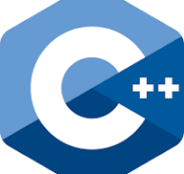

文章
4
分类
1
标签
1
功能
显示模式
项目
Solitude
首页
文库
文章列表
全部分类
全部标签
友链
友情链接
我的
装备
工具箱
关于
关于本站
标签
c++
4
项目
Solitude
Solitude
tiny-sky 的个人博客
首页
文库
文章列表
全部分类
全部标签
友链
友情链接
我的
装备
工具箱
关于
关于本站
0
宁静致远
热爱生活
Hexo Theme Solitude
语法体系
数据库
实用教程

语法体系
数据库
置顶
Solitude 主题文档
更多推荐
首页
c++
更多
c++
最新
未读
std::tuple 解析
c++
c++
未读
std::tuple 解析
c++
c++
未读
c++ 中左右值与 std::move 的解析
c++
c++
未读
std::tuple 解析
c++
1
sayhello.morning
分享自己对编程的
热爱
，对美好生活的
向往
。
相信你可以在这里找到对你有用的知识和教程。
tiny-sky
人生苦短，及时行乐
c++
4
2024/04
4
篇
文章总数 :
4
建站天数 :
最后更新 :